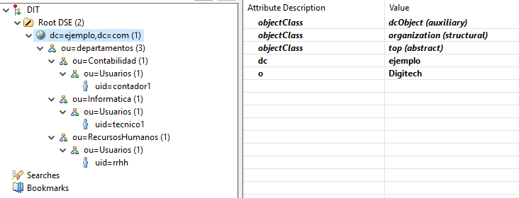

Conexión a LDAP desde Apache Directory Studio
Gestión gráfica del directorio LDAP desde Windows
Introducción
Aunque ahora puedes conectar con tu servidor LDAP de varias formas, vamos a probarlo desde Windows usando Apache Directory Studio.
Configuración de la Conexión
Crearemos una nueva conexión con estos datos para conectar usando el usuario rrhh:
- Hostname: 172.26.151.74 (IP de tu WSL)
- Port: 389
- Bind DN: uid=rrhh,ou=Usuarios,ou=RecursosHumanos,ou=Departamentos,dc=ejemplo,dc=com (o el DN que hayas configurado)
- Bind Password: cat123 (o la contraseña que hayas configurado)
Visualización de la Estructura
Verás de forma gráfica la estructura creada:
